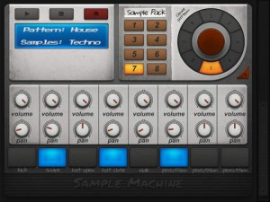

[appext 950247962]Welcome to Sample Machine, a must-have music application for everyone who looks for more. Open new possibilities of your musical talent with the powerful and user-friendly sequencer. Record or upload any sounds you like and transform them with the variety of adjustable effects and filters which give the full play to your fantasy. Turn your device into a stylish musical instrument.
HOW TO USE: record sounds with the mic by pressing the rec button or upload the files from your SD card. Choose the effects and turn the sliders to reach the sound you need. Use sample pattern and genre pattern to choose from the pre-recorded samples. Use the sequencer to loop the samples and the filter panel to make the precise adjustments.
Sample Machine features:
– Powerful sampling system
– Stunning 8-track sequencer
– Large library of pre-recorded samples
– Individual effects panel for every sample
– Modern and realistic visuals
– Convenient 8-pad drum-machineSample Machine is a full-fledged sequencer, sampler and drum machine in one app, it will forever change your musical vision and let your talent grow.
Sample Machine
StagePlot Guru for iPad
I know this app does’t make a wink of sound, but I for one have spent many hours trying to prepare a half professional stage plot using only MS Word, and it was terrible. So this will be handy for those occasions when you need a refreshed stage plot and need it quickly.
[appext 843432883]StagePlot Guru for iPad is an an all encompassing easy-to-use intuitive application for StagePlot design.
**APP IS FREE TO DOWNLOAD WITH LIMITED CATEGORY AND FEATURE USE, UPGRADE TO PRO-VERSION AND UNLOCK ALL CATEGORIES AND FEATURES FOR $4.99.
Build a stage from the ground up with a touch and pinch of your fingers.
-Touch and Grab Icons
-Easy-to-Read Graphics
-Editing Tool Bar
-Intuitive User Interface
-Collapsable Bars to Maximize WorkspaceOUTSTANDING FEATURES
-Pro version stores over 100 StagePlots.
-Change, rotate, resize props as needed.
-Make lists for each prop chosen. Lists appear on the final readout.
-Dedicated readouts for Equipment, Technical Input, Equipment and Dimension lists for every prop.
-Customize Names of each prop.
-Upload Customized Logo via iPad Camera Roll
-Add Contact/StageManager Info
-Print/Share PDF or Image of StagePlot
-Arrange the final layout in the Arrange Stage Preview screen
-Select from hundreds of props
-Upgraded prop category options
-Produces a clean/professional StagePlot
-Purchase additional props and prop packs from built-in PropShop
-Consistent updating of PropShop with more props
-icloud storage for stageplots
-Use the Quick-Text Button to label the props and the stage
-Share on Social Media
-Auto Size stage dimensions which can be turned on/offFor a full rundown, check here – http://www.stageplotguru.com/
Limiter
[appext 945375756]Limiter – Amazing Noises Audio Processor
Audiobus and Inter-App Audio Effect.
A brickwall peak limiting app, for the complete control of your audio volume.
Please note that this app is made for Audiobus and Inter-App Audio; it is not intended to be used as standalone!The Amazing Noises Limiter it has a wide range of dynamic processing:
from very gentle volume attenuation to heavy distortion (if you want it!).Main Features:
– Audiobus and Inter-App Audio support
– Brickwall Limiter
– Live Normalizer
– Control Manager LFO for Parameters
– Midibus, Virtual Midi and Network: 14 bit NRPN controllers
– Snapshots Presets Morphing Pad
FLUX:FX
FLUX:FX is a professional multi-effect audio processor app for the iPad that lets you ‘play’ your effects. Innovative, intuitive and exciting, FLUX:FX lets you manipulate any audio signal into something entirely new, and redefines the possibilities of audio and live performance in an app with an almost unlimited range of effect options. FLUX:FX is a truly authentic digital platform for next-level sound design. Guitar, bass, synth, drums, vocals, DJ setup, violin… basically ANY audio signal can be processed in real-time by FLUX:FX. Over 18 months in development, this app represents the pinnacle of touch-screen multi-effects, and was designed in conjunction with acclaimed musician Adrian Belew for both studio and live use.
TRULY CREATIVE EFFECTS: FLUX:FX has over 30 studio-quality effects to choose from, and an almost unlimited range of settings to let you twist and sculpt your sound. Chain 5 together for maximum aural impact.
POWERFUL SEQUENCER: A touch-based automation sequencer for your effects that adds a completely new fluid dimension to your sound design.
DEEP EDITING HEAVEN: Every parameter of every effect is editable, assignable and with the fine tuner dial, PRECISE. That makes FLUX:FX a tweaker’s paradise.
TRANSPARENT INTERFACE DESIGN: FLUX:FX has a beautiful, minimalist interface combining easy-to-use controls with a mesmerising liquid polygon audio visualizer. No fake road-worn pedal graphics here.
MADE TO BE TOUCHED – Designed and built from scratch as an iPad app, FLUX:FX is not a port from an existing plugin, it is MADE to be touched. And swiped, and dragged, and tapped. No tiny dials here.
MADE BY EXPERTS – conceived and created via the combined talents of guitarist extraordinaire Adrian Belew, audio software developers ElephantCandy and mobile specialists MOBGEN.
PLAYS WITH EVERYTHING – Audiobus compatibility (including saved states), Inter-App Audio compatibility, super-fast MIDI, virtually all the audio interfaces… they just work with FLUX:FX.
COMPLEX SOUND, EASY TO USE – chopping, shaping, crushing and looping – FLUX:FX can take you from subtle modulating echoes through to wrecking-ball destruction, all with a swipe of a finger.
LOWEST POSSIBLE LATENCY – FLUX:FX features ultra low-latency settings to give truly professional performance capabilities.
There are more than 30 individual effect blocks that come built-in to FLUX:FX. We do not force users to make in-app purchases to unlock essential tools, or to register in order to stop ‘advertising’ alerts.
Choose from the following audio building blocks to create your modular effect chain:
• OVERDRIVE
• DISTORTION
• FUZZ
• BITCRUSH
• DESTROY
• DECIMATE
• STUTTER LOOP
• REVERSE LOOP
• LOOP SLICE
• SEGMENT
• SAMPLE SCRATCH
• COMPRESS
• PUMP
• ULTRA EQ
• KILL EQ
• LOWPASS FILTER
• HIGHPASS FILTER
• BANDPASS FILTER
• CHORUS
• FLANGE
• PHASE
• RESONANT DRONE
• PITCH DELAY
• OCTAVE SHIFT
• RING MODULATE
• AUTO PAN
• DIGITAL DELAY
• BINAURAL DELAY
• TAPE ECHO
• SCATTER VERB
• DELAY/REVERBPlus a master LIMITER to keep all the sonic chaos in check.
[appext 943915646]
Phase84
[appext 940880314]Phase84 is an extremely capable synthesizer and features over 110 presets, containing all sorts of basses, leads, pads, bell tones, sweeps, atmospheric sounds, pseudo-realistic tones, and more. While you don’t need to know much about synthesizers to get a lot out of Phase84, experienced synth tweakers will be thrilled at the sheer variety of unique sounds that can be produced with this incredibly versatile synth.
So What’s Phase84 All About?
Phase84 is what’s known as a Phase Distortion synthesizer. This form of waveshaping synthesis has its roots in Casio’s brilliant CZ line of digital synthesizers from the 80s. It is designed to have the warmth of a subtractive (analog) synthesizer, yet be capable of the squelchy tones and sharp attacks of an FM synth. Phase84 in particular can create warm pads, glitchy sounds, dirty basses, filthy sweeps, screaming leads, and anything in-between.
For those familiar with the typical Moog-like (or iMini-like!) synthesis, think of the “shaper” as being synonymous with “brightness” or “filter cutoff”.
Features:
More than 100 presets.
MIDI support.
inter-App Audio support.
Advanced Keyboard section.
Expressive Perform Mode with Groove Gate.
Tabletop Ready App.
Precision Knob mode.
Phat, naturalistic unison feature for super thick pads and sweeps.
Oscillator Section: 9 Params, 2 General-Purpose Oscillators, 1 Formant Oscillator.
Mix Section: 8 Params including Delay Amount and Pulse Width.
Envelope Section: Amplitude and Shaper Envelopes. Fully visualized and interactive ADSR plus special Fade Param.
Delay/Filter Section: Stereo delay with loss modeling and a punchy overdriven analog-style filter.
3 LFOs: More flexible than your average LFO, this has 4 waveforms, optional delay and repeat count, and can go into the audible frequency range.
Million Licks
[appext 850888979]Are you ready for an amazing breakthrough in Guitar Lick Technology?
What if someone told you they could easily teach you how to play 100 consistent, structured awesome sounding blues/rock licks? How about a 1000 or 10,000, but why stop there? This insane ground-breaking app can show you a virtually unlimited number of licks, way beyond 1,000,000+ licks! Pick a key, tempo and a backing track – then run the blues-inspired random lick generator to see the app play endless variations. Hear something you like? Save it to the library or tweak it first. Everything you save can be called up later to be practiced at slower (or faster) tempos or in different keys. Want to build something from scratch? Easy! Just pick from the list of licks and experiment away.
How do they do that?
Million Licks is based on the knowledge that so many great solos are created from back to back 8-beat (2 measure) phrases, and that the building blocks of these larger phrases are small 1 and 2 beat improvisational ideas. We take some of the best classic guitar lick ideas from the blues and rock shuffle world, teach them to you, and then show you how to spontaneously recombine permutate and modify them in any order to ultimately create your own original phrases and licks. Mark has composed dozens of 8-beat licks that are included with the app beyond the millions possible! And even more, Million Licks is designed and built to be upgraded, so new licks will be available periodically.
What goes into making a great solo?
Million Licks is a radical departure from learning a phrase by rote and then moving on because it actually shows you the finer details of what goes into a well crafted phrase, demonstrates hows these phrases are connected, and teaches you how to create variations within that phrase. Why? Because the really great improvisers know how to take a good idea and construct variations built upon spontaneously recombining their smaller pre-learned bits to create larger ones as well as morphing into new ones. And of course they’re doing all this while executing clear, concise, longer articulate phrases which have a definitive beginning and end.
When soloing are you randomly running notes across the neck, and every once in awhile playing something you think might have sounded pretty cool? It happens! The problem is when you have no idea what you just did, why it worked, and even worse how to duplicate it. If you’re like most guitarists first starting to improvise your solos probably seem to have little or no form and you feel like you’re just rambling.
Open your ears and fingers to the endless possibilities!
Features:
– Tablature for all licks in all keys
– Ability to slow down, speed up to desired tempo; ability to loop
– Several professionally-recorded backing tracks to chose from
– Virtually unlimited number of licks musically created for you
– Dozens of Mark’s pre-crafted licks
– Ability to compose or modify any licks
– Ability to save you own library of licks
– Several backing tracks to choose from
Song Maker
[appext 942398181]Make a song with a tap, choose your style and export it to iTunes. All license and royalty free ! Song Maker is the best tool for everyone who needs background music and backing tracks for practice.
We added a scale trainer, virtual guitar and a media player for iPhone 5, 6, and 6 Plus.This is the full version with no ads, all styles (country, blues, jazz, pop, rock, hard rock, reggae, techno) and all features like export to iTunes funktion, guitar scales, key detector and the song wizard!
With Song Maker you can easy write down your chords and let them play by musicians. If you got no idea for a song or chords to play then just press the song wizard and Song Maker creates a whole song for you. You can create yourself or let Song Maker generate the different parts of a song like intro, vers, chorus, bridge and outro. Define a song structure or let Song Maker do it for you on a a tap and your song is ready to play.
By playing or saving your song it is exported to iTunes. You can play your song in different styles and even transpose and slow down it, without loosing the excellent sound quality, what is a nice feature for singers and musicians.
The built in song wizard is great for developers. Just tap the song wizard, save your song and you have *.m4a – file to work with in garage band, logic and other DAW´s. Perhaps you want it to use with iMovie, FinalCut etc. for your Audio – Track.
An expert system, that is based on proven information of artists creates popular chord progressions on a touch. We even developed a whole new sound engine, to let Song Maker sound like a live playing band. You just need to play around with chords, styles and structures – if you like.
If you need someone to play your chords or chords from a song, than you need Song Maker. If you want to play around with your song ideas, than it is a “must have”.
Song Maker sounds fantastic und makes lot of fun, even if you just want to hear to music. Just press the – Song wizard – button and Song Maker creates songs. You don´t need to buy ambient sounds, just do it yourself with a tap!
what´s more on iPhone 5, 6, 6 Plus:
We added a media player to load songs of your iTunes library and slow parts of them down for practicing.
We added a virtual guitar for practicing, if you got no real.
We added a scale trainer to raise your guitar skills.Song Maker is perfect for:
– make a whole song with a tap and Export it to iTunes
– play along by using the virtual guitar
– learn guitar scales
– transpose and play given chords and let them play by a band in different styles
– try out different structures
– give you some popular chord – progressions
– try out your chord progressions in different styles
– the creation of backing tracks for musicians
– to playing chords of songbooks by a whole band (just type them in an choose a style)
– to play ambient music
– doing excises with songs of your iTunes library
– to improve you guitar skills
– to learn improvisation and get better skillsSome special features are:
– edit every single song part and let Song Maker build the song
– try out different structures and keys
– transposition on a touch with out loosing quality
– let Song Maker create popular chord progression
– save and load song and song parts
– let Song Maker play your ambient musicStyles:
– Country
– Blues
– Jazz
– Pop
– Rock
– HardRock
– Reggae
– Techno
Photophore Synth
Photophore is a unique instrument that uses flocks of up to 100 sound generators to create rich, organic synthesizer sounds. By controlling the behavior of the flocks you can make Photophore sound like a choir of synthesizers or, at more extreme settings, a swarm of angry insects.
Unlike other digital synthesizers, Photophore creates warmth and character in a completely new way. Instead of modeling analog circuits, it models animal behavior. Photophore’s sound engine is made up of flocks of oscillators that move through a virtual three-dimensional environment. Their motion is controlled by a special behavioral algorithm and physics simulation that keeps the oscillators in tune with each other, but allows for a certain amount of natural drifting and detuning. This creates rich timbres that are perfect for crafting massive bass sounds, complex pads and searing leads.
You can interact with the oscillator flocks by controlling their behavior – how much they try to flock together, how much they avoid each other, their speed, and how much turbulence is in their environment. Oscillators will flee from your touch, so you can create extreme pitch modulation and more chaotic effects by simply swiping across the screen.
Key Features:
• Unique flock synthesis engine
• Up to 100 oscillators per patch
• Monophonic or polyphonic operation (up to 6 voices)
• 6 oscillator waveforms (saw, square, pulse and more)
• Low pass/High pass filter with resonance
• Dedicated amplitude and filter envelopes
• Stereo echo effect
• ArpeggiatorConnectivity:
• Use any iPad-compatible MIDI keyboard to play notes and perform pitch bends
• AudioBus and Inter-App Audio support for streaming audio to other apps
• Control Photophore from other apps via CoreMIDITech Requirements:
• iOS7 or later required
• iPad 2 or later required, iPad 4 or later recommended*
[appext 937318617]
FM4
FM4 is a four operator FM synthesizer for iPad. Modelled on the popular DX series from the 1980s FM4 provides the same gritty sound, with a modern interface, and without being bound by the limitations of the original units.
Every aspect of the hardware — from envelope curves to sine-table sizes and quantisation errors to digital-to-analogue converters — has been meticulously analysed, in order to recreate the raw and dirty sound of the original units.
The interface of FM4 has been carefully thought-out and is simple and intuitive, yet powerful — with every parameter being available on a single page. No menus, tabs, or jumping from page to page.
FM4 is capable of producing a multitude of sounds, ranging from punchy basses, crystal-clear bells, and lush pads, to organic textures, striking drums, and piercing leads.
Features:
– Four operators configurable in eight different routings
– Three sound engines modelled on 1980s hardware units
– Eight waveforms derived from classic FM synths
– 2x, 3x, and 4x polyphonic unison
– Tempo-syncable arpeggiator with up, down, up-down, and random patterns
– Microtuning with eight different temperaments
– Supports Inter-App Audio, background audio, and MIDI over bluetooth (support for Audiobus is coming)
– Up to 24 voices of polyphony
– Presets can be imported/exported through iTunesAll product names used are trademarks of their respective owners, and reference to these here in no way constitutes an association or affiliation with Primal Audio. All trademarks are solely used to identify the products whose sound was studied during the development of FM4.
[appext 910545680]
Woodwind instrumentSS Vol.3
[appext 948131185]
A woodwind instrument is a musical instrument that belongs to the wind instrument family other than woodwind instruments. Woodwind instrumentSS is a music application packed with 6 different woodwind instruments such as the Bass Clarinet and the Bagpipes. You can also purchase each percussion separately, however Woodwind instrumentSS allows you to save 30% from the actual price.
Woodwind instrumentSS is designed to allow you to easily play the trumpet with a single finger. Unlike the actual a woodwind instrument , you don’t need to have a large lung capacity, but you will be able to play it just by touching the inner side of the white dotted line. With Woodwind instrumentSS, you can start playing the trumpet right away and enjoy its sound whenever you want, wherever you are!
Added a volume slider at the bottom center of the screen in order to fix the problem that fade out doesn’t work while you can play staccato notes with the stop button. When you fade the audio out, please make sure to tap the stop button.
Added the recording function!
It picks the surrounding sounds as well, and you can use it in many different ways such as recording your vocals or creating a voice memo. You can also send the recorded data via email. Note that the maximum attachment size of an email depends on the iOS device you are using. Please contact your cell phone service provider for further information. * A 10 seconds recording is around 450 kB.* Support iTunes file sharing(http://support.apple.com/kb/HT4094?viewlocale=en_US)
Added the play with other music app button on the right side of the record button (however, this disables the recording). For example, you can play along with your favorite songs on Music app.
Now you can select the audio file format when recording. If you want to send a file via email, record at “22kHz / 8 bit” to reduce the file size.
* Users who have a problem with the musical instrument app that doesn’t make any sound. (http://support.apple.com/kb/HT5137?viewlocale=en_US)
* Volume slider
* Display scale on keyboard
* Support orientation
* Record button / Play button / Stop button / Send the sound data via Email button
* Support iTunes file sharing
* Play with other music app button– Set Contents
– BassClarinetSS(Paid)
Range: D2 – A5, approximately 4 octaves (44 tones) – iPad
Range: D3 – A5, approximately 3 octaves (32 tones) – iPhone, iPod Touch– ZamponaSS(Paid)
Range: D4 – B5, approximately 2 octaves (22 tones)– ShakuhachiSS(Paid)
Range: C3 – C7, approximately 4 octaves (49 tones) – iPad
Range: C3 – C6, approximately 3 octaves (37 tones) – iPhone, iPod Touch– BagpipesSS(Paid)
Range: G2 – C4, approximately 3 octaves (29 tones)– HarmonicaSS(Paid)
Range: C3 – C7, approximately 4 octaves (49 tones) – iPad
Range: C3 – C6, approximately 3 octaves (37 tones) – iPhone, iPod Touch– NeySS(Paid)
Range: A3 – E6, approximately 3 octaves (32 tones)


{kind=link}
{kind=link}
{kind=link}
{kind=link}
{kind=link}
{kind=link}
{kind=link}
{kind=link}
{kind=link}